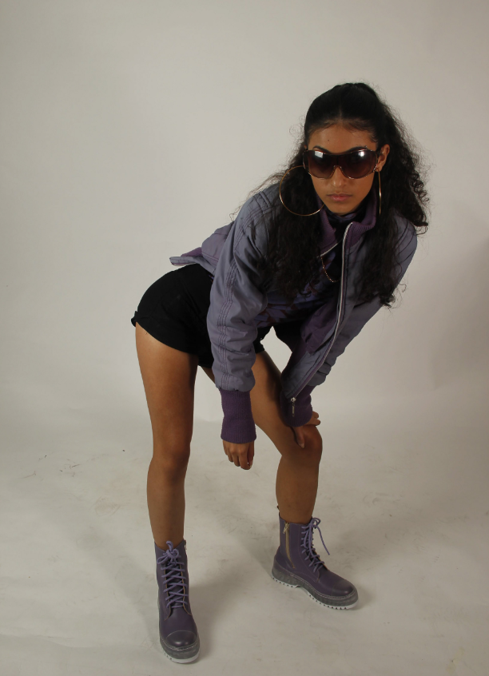
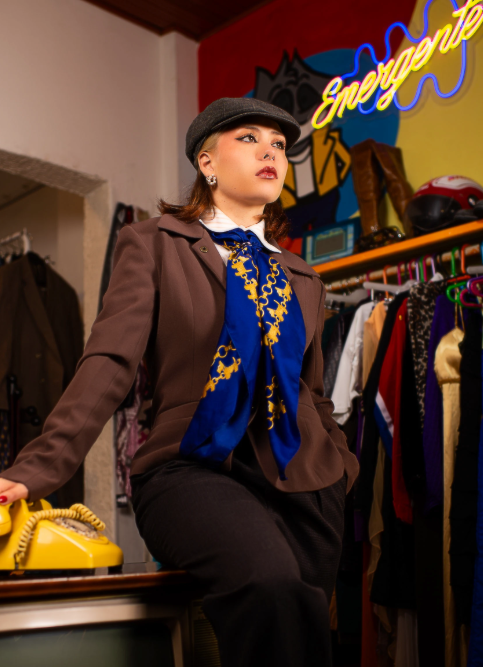
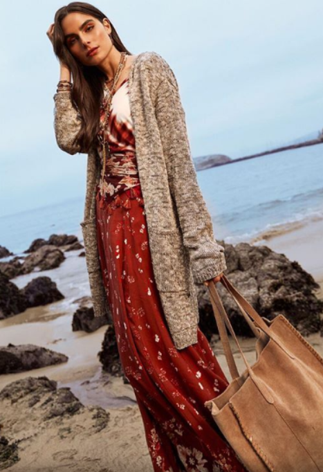
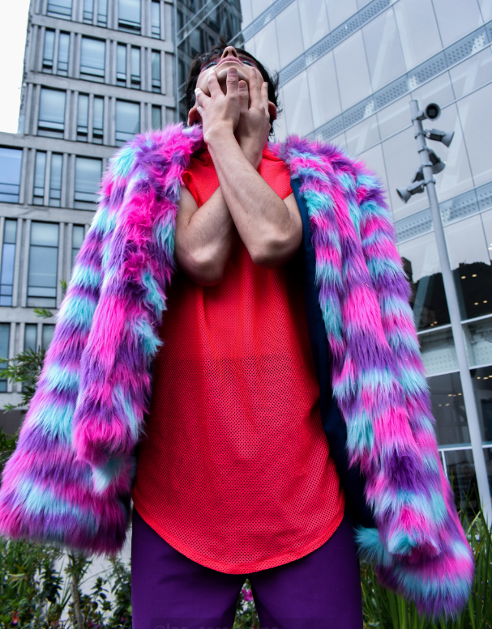

URBANA 21/6
Nace de la calle y evoluciona con ella. Es una expresión cultural que fusiona comodidad, rebeldía y estilo, influenciada por el skate, el hip-hop, el arte callejero y las subculturas juveniles. Más que una tendencia, es una actitud que refleja identidad, libertad y pertenencia a un entorno urbano dinámico y diverso.
Ver más

VINTAGE 22/6
Rescata prendas y estilos de décadas pasadas, revalorizando su historia, calidad y estética atemporal. Es una forma de expresión que combina nostalgia y originalidad, promoviendo el consumo consciente y la reutilización. Cada pieza vintage cuenta una historia, y al vestirla, quien la lleva también se convierte en parte de ella.
Ver más
CLÁSICO 27/6
Se caracteriza por su elegancia, sobriedad y permanencia en el tiempo. Basada en cortes refinados, materiales de calidad y una paleta neutra, trasciende las tendencias pasajeras para ofrecer un estilo atemporal. Es sinónimo de buen gusto y equilibrio, y sigue siendo una referencia sólida en el mundo del diseño y la indumentaria.
Ver más

BOHO 28/6
Se inspira en el espíritu libre, artístico y nómade. Combina elementos del estilo hippie, étnico y vintage con telas fluidas, estampados naturales y accesorios artesanales. Es una expresión relajada y creativa del vestir, que celebra la individualidad y la conexión con la naturaleza.
Ver más

SOSTENIBLE 29/6
Busca minimizar el impacto ambiental y social de la industria textil, promoviendo prácticas responsables en todo el proceso de producción. Apuesta por materiales orgánicos, reciclados o de bajo impacto, así como por el comercio justo y el diseño duradero. Es una forma de vestir que combina estilo con conciencia, cuidando el planeta y respetando a quienes lo habitan.
Ver más